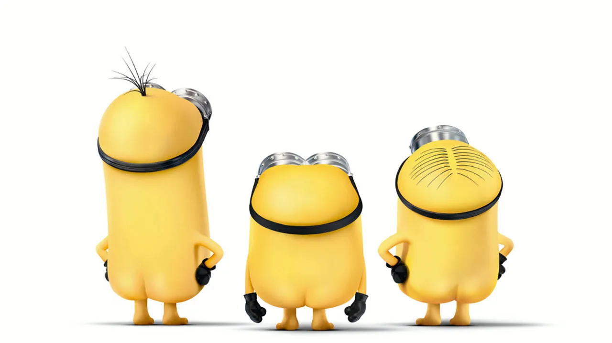

About Minions
In view of the way they dress, you could have assumed that the minions are both male and female, but in reality, none of them are female. Since they are insane, one of their favorite pastimes is cross-dressing. (Much as they enjoy singing) As you can see, they have very simple vocabulary and speech patterns. Minionese is a language made out of a combination of terms from several other languages. It has a sprinkling of Korean and Russian along with French, English, Italian, and Spanish. Actually, a few of the terms they employ are only the names of various dishes. (However, their go-to banana remains unchanged.)
My most funniest minions
Minions Personalities
- They are loyal and kind, but they have very little self-control.
- They're silly and just w They love their boss, they love playing.
- They get into trouble and screw things
Minions and Their Master
Minions are biologically wired to seek out and serve the most terrible of villains; when they have no "boss" to serve, they become depressed and listless.